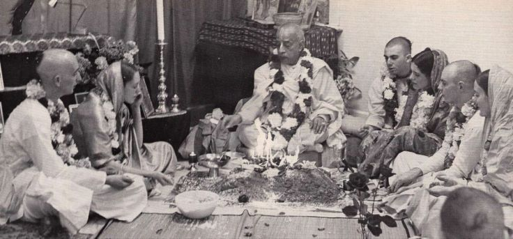

Prabhupāda, what does it mean to be married in Krsna consciousness?

A newlywed husband-wife disciples once approached Srila Prabhupāda for advice about marriage and got a puzzling reply.
Śrila Prabhupāda had himself performed a fire yajna ceremony for the young man and woman in his London temple, and the next morning the newlyweds managed to accompany Srila Prabhupāda alone on his morning walk. The husband walked next to Prabhupada and the wife walked three paces behind.
"Prabhupāda, what does it mean to be married in Krsna consciousness?" Prabhupāda was silent for a moment and then said, "To be married in Krsna consciousness means that before you eat your prasādam, you go out in the street and you call three times loudly. Does anyone want to take prasādam? Does anyone want to take prasadam? Does anyone wants to take Prasadam? And if no one comes, then you take your prasadam"
The husband felt somewhat bewildered, because he was hoping to hear directions about the position of a married couple and how they should deal intimately in relating to each other. The young man thought that perhaps prabhupada had not understood him, and so near the end of the walk he again asked the same question.Prabhupāda, what does it mean to be married in Krsna consciousness?" Prabhupãda steadily repeated his answer, "To be married in Krsna consciousness means that before you take prasādam, you go out into the street and you call loudly three times, "Does anyone want to take prasādam and if no one comes, then you take prasādam."
~ Prabhupad nectar 32 pg.95-96
In the revealed scriptures there are two nomenclatures for the householder's life. One is gṛhastha, and the other is gṛhamedhī. The gṛhasthas are those who live together with wife and children but live transcendentally for realizing the ultimate truth. The gṛhamedhīs, however, are those who live only for the benefit of the family members, extended or centralized, and thus are envious of others. The word medhī indicates jealousy of others. The gṛhamedhīs, being interested in family affairs only, are certainly envious of others. Therefore, one gṛhamedhī is not on good terms with another gṛhamedhī, and in the extended form, one community, society or nation is not on good terms with another counterpart of selfish interest. In the age of Kali, all the householders are jealous of one another because they are blind to the knowledge of ultimate truth. They have many subject matters for hearing—political, scientific, social, economic and so on—but due to a poor fund of knowledge, they set aside the question of the ultimate miseries of life, namely miseries of birth, death, old age and disease. Factually, the human life is meant for making an ultimate solution to birth, death, old age and disease, but the gṛhamedhīs, being illusioned by the material nature, forget everything about self-realization. The ultimate solution to the problems of life is to go back home, back to Godhead, and thus, as stated in the Bhagavad-gītā (8.16), the miseries of material existence—birth, death, old age and disease—are removed.
some quotes:
In the revealed scriptures there are two nomenclatures for the householder's life. One is gṛhastha, and the other is gṛhamedhī. The gṛhasthas are those who live together with wife and children but live transcendentally for realizing the ultimate truth. The gṛhamedhīs, however, are those who live only for the benefit of the family members, extended or centralized, and thus are envious of others. The word medhī indicates jealousy of others. The gṛhamedhīs, being interested in family affairs only, are certainly envious of others. Therefore, one gṛhamedhī is not on good terms with another gṛhamedhī, and in the extended form, one community, society or nation is not on good terms with another counterpart of selfish interest. In the age of Kali, all the householders are jealous of one another because they are blind to the knowledge of ultimate truth. They have many subject matters for hearing—political, scientific, social, economic and so on—but due to a poor fund of knowledge, they set aside the question of the ultimate miseries of life, namely miseries of birth, death, old age and disease. Factually, the human life is meant for making an ultimate solution to birth, death, old age and disease, but the gṛhamedhīs, being illusioned by the material nature, forget everything about self-realization. The ultimate solution to the problems of life is to go back home, back to Godhead, and thus, as stated in the Bhagavad-gītā (8.16), the miseries of material existence—birth, death, old age and disease—are removed.
~ Srimad Bhagavatam 2.1.2 purport
The difference between gṛhamedhī and gṛhastha is that gṛhastha is also an āśrama, or spiritual order, but if one simply satisfies his senses as a householder, then he is a gṛhamedhī.
~ Srimad Bhagavatam 3.22.11 purport
Jay srila Prabhupad!